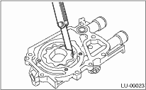
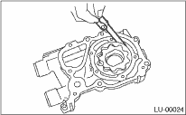

Measure the tip clearance of rotors. If the clearance exceeds the limit, replace rotors as a matched set.
Tip clearance:
Standard:
0.04 — 0.14 mm (0.0016 — 0.0055 in)
Service limit:
0.18 mm (0.0071 in)

Measure the clearance between outer rotor and oil pump case. If the clearance exceeds the limit, replace the rotor.
Case clearance:
Standard:
0.10 — 0.175 mm (0.0039 — 0.0069 in)
Service limit:
0.20 mm (0.0079 in)

Measure the clearance between oil pump inner rotor and oil pump cover. If the clearance exceeds the limit, replace rotor or oil pump case.
Side clearance:
Standard:
0.02 — 0.07 mm (0.0008 — 0.0028 in)
Service limit:
0.12 mm (0.0047 in)

Check the valve for assembly condition and damage, and the relief valve spring for damage and deterioration. Replace the parts if defective.
Relief valve spring
SOHC MODEL
Free length:
72.8 mm (2.866 in)
Installed length:
54.7 mm (2.154 in)
Load when installed:
81.3 N (8.28 kgf, 18.23 lb)
DOHC MODEL
Free length:
73.7 mm (2.902 in)
Installed length:
54.7 mm (2.154 in)
Load when installed:
93.1 N (9.49 kgf, 20.88 lb)
Check the oil pump case for worn shaft hole, clogged oil passage, worn rotor chamber, cracks and other faults.
Check the oil seal lips for deformation, hardening, wear, etc. and replace if defective.